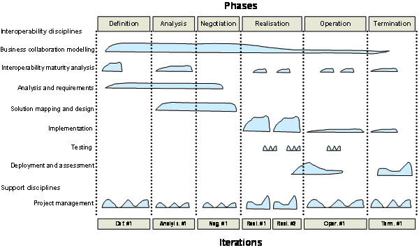
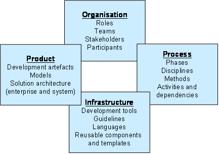
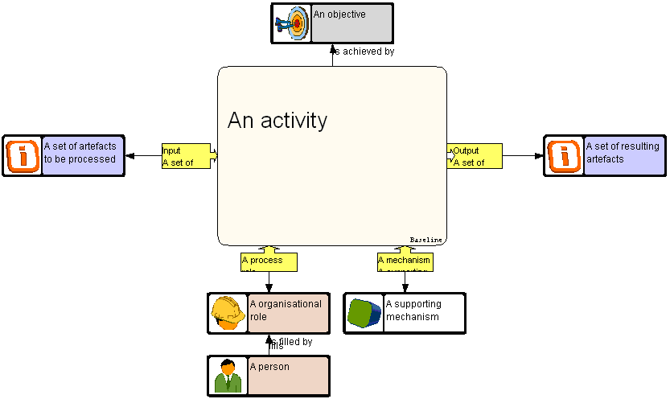
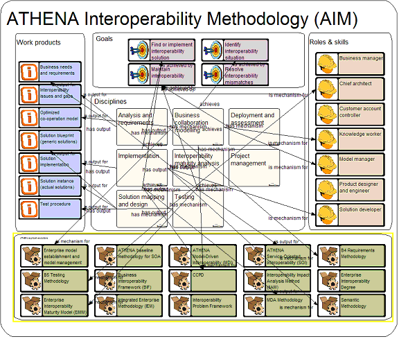
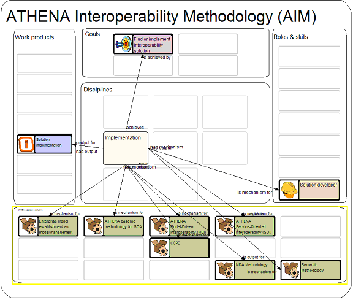

")

Interoperability methodology
Introduction
This chapter details the applicative integration part of the AIF, specifying the ATHENA Interoperability Methodology (AIM), the AIM-related concepts, guidelines and how the AIM should be applied and how the resulting method could support different roles of an interoperability project.
ATHENA Interoperability Methodology (AIM)
The ATHENA Interoperability Methodology is influenced by the Enterprise Unified Process (EUP) [EUP 2006]. EUP is an extension to the Unified Software Development Process (UP) [Jacobson, et al. 1999] which is a recognized and commonly used software development methodology. Whereas the UP defines a software development lifecycle, the EUP extends it to cover the entire ICT lifecycle. The AIF applicative framework builds on the EUP and extends it further by introducing new interoperability disciplines. An interoperability discipline is a group of activities within a specific interoperability field which are logically grouped together.

In the figure above, the ATHENA Interoperability Methodology is rendered from an overall perspective, showing the essential structure of phases and disciplines. The phases of an interoperability project life-cycle are represented by the columns. The rows in the figure outline the set of principles that characterise the mature approach for the definition, creation, operation and termination of an interoperability project. Within each discipline, the AIM recommends sets of activities to be performed in the different phases of the interoperability project. The kind of artefacts created and manipulated by the activities are varying dependent on the phase. The load of activities within a discipline will also vary dependent on the phase.
Architecture of the methodology framework
In order to be useful for industry, the AIF should guide companies in selecting the best ATHENA approach for their interoperability needs. For each approach, a methodology should describe:
- Which roles are involved in the project (organisation perspective)
- Which tasks they perform in which order (process perspective)
- Which tools they use for each task (infrastructure perspective)
- What the resulting artefacts and solutions are (product perspective)

Considerations related to the four perspectives are:
- Organisation perspective: Typical roles in an interoperability project include:
- Business Manager with views on business project portfolio, dashboard for performance monitoring and governance, and strategic objectives and goals.
- Customer Account Controller with views on total customer involvement, customer portfolio, status on delivery of solutions and services, and ongoing current work.
- Chief Architect with business, EKA, and ICT descriptive views of which views are critical for the other roles and the desired solutions.
- Model Manager with views on existing relevant models and contents, metamodels and metadata, and approach.
- Solution Developer with views on business operations, solutions and users, logistics and maintenance.
- Knowledge Worker or model builder with views on business network, EKA, modelling approaches, methodologies and languages, and logistics.
- Product Designer and Engineer with views on business solution use in design and engineering, user services, and user requirements and solutions.
- Process perspective: Here we define the overall phases and steps in an interoperability project following the methodology.
- We focus on methods that support the interoperability disciplines that are carried out incremental and iterative within the phases. Each phase or step may be decomposed into activities.
- The recommended disciplines in the AIM are described to the needed level of details sufficient to characterise the activities and the connected artefacts. The disciplines should be considered as placeholders for actual techniques, solutions and service offered by ATHENA to be used in the activities in question.
- Infrastructure perspective: Each method should define the tools that support it, which includes modelling tools, modelling languages, guidelines and documentation, reusable patterns and templates, programming tools, repositories and transformation tools.
- Product perspective: The products of an interoperability projects are the solution which consists of the technical system architecture that describes the ICT infrastructure and the enterprise architecture that describes the usage environments. The product perspective also covers artefacts that are created during the development projects such as models, documents, contracts, etc.
Model of the methodology framework
The AIM methodology can be made operational by implementing the different methods and activities in a method engineering platform. The recommended activities can be formalised as models that can be configured and executable in supporting the different roles of an interoperability project. The structure shown in the figure below can be used to describe the method components of the ATHENA Interoperability Methodology:
- Activity (i.e. what to do)
- Objective (i.e. what will be achieved by performing the activity)
- Input (i.e. the artefact to be processed in the activity)
- Output (i.e. the artefacts being the result of the activity)
- Roles (i.e. the way people are related to the activity; responsible, participant, customer, …)
- Supporting Mechanisms (i.e. information, document, models, systems, processes that are supporting the activity, …

An example of applying the structure described above is shown in the figure below which gives a high-level overview of the AIM. The disciplines are of the AIM are modelled as activities. For each discipline we describe relationships to the goals they support, the required and resulting work products (input and output), the roles that are involved, and finally the concrete methods developed in ATHENA that can be applied.

Such an approach can be used to tailor the methodology for different roles. Role-specific views can be created that filters out details that are not needed by certain roles and the different views can be consistently maintained in a method engineering platform. The figure below gives an example of the method components available to a solution developer.
